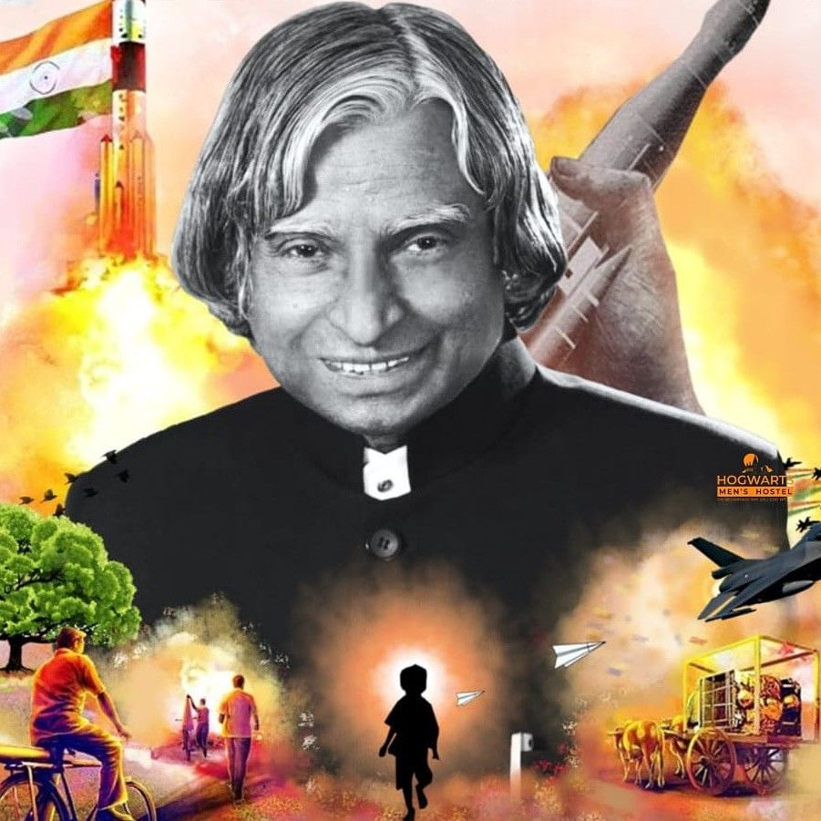

About Dr. APJ Abdul Kalam
Dr. APJ Abdul Kalam, known as the "Missile man of India," was an eminent aerospace scientist and the 11th President of India. He played a pivotal role in India's civilian space program and military missile development, earning him the title of "People's President."
Achievement
- Missile Development: Instrumental in the development of India's first satellite launch vehicle and ballistic missiles.
- Presidency: Served as the 11th President of India from 2002 to 2007, known for his inspirational speeches and vision for India's youth.
- Education: Authored several books, including "Wings of Fire," which inspired millions of students across the country.
- Honors: Received numerous awards, including the Bharat Ratna, India's highest civilian honor, for his contributions to science and education.